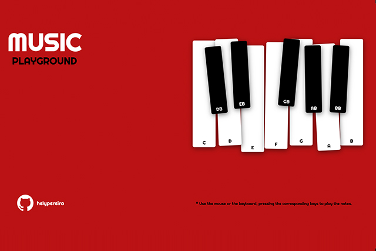

Portfolio
Programming & Design
MovieQuest
HTML
CSS
Node.js
Express.js
API
Axios
As part of this project, a web application has been developed using Node.js and Express.
The application leverages modern technologies like Axios to make requests to The Movie Database
(TMDb) API. An additional layer of security has been implemented through authentication tokens
to ensure secure communication with the API.
The user interface is built using the EJS template engine, enabling the creation
of dynamic and appealing pages. The application allows users to search for movies
with real-time results as they type. Additionally, there is a trending section highlighting
the most popular movies of the moment.
The code adheres to best development practices, maintaining cleanliness and modularity.
Emphasis has been placed on usability and user experience, focusing on creating an intuitive
interface. The project demonstrates technical proficiency in web development, showcasing a
commitment to building functional and engaging applications.
In summary, this project stands out for its efficient use of modern web technologies,
attention to security, and a user-centric design that provides a pleasant experience
for exploring and obtaining information about movies.
Blog (CRUD)
HTML
CSS
JavaScript
Node.js
Express.js
EJS
MongoDB
This code represents the implementation of a web server using Node.js,
Express, and MongoDB for a blog system. It allows basic Create, Read,
Update, and Delete (CRUD) operations for blog entries, including image management.
It also uses the EJS template engine to dynamically generate blog views.
The connection to the MongoDB database is established using Mongoose. Additionally, image uploading
is implemented with Multer, and the images are stored in the "uploads" public directory.
The web application includes various routes, such as viewing all entries, reading a specific entry,
creating new entries, and editing and deleting existing entries. Dates of the entries are formatted using the Moment.js library.
The code is modularly structured and follows common Express practices. Measures have been implemented
to properly filter and process uploaded image files, as well as to handle errors in case issues arise during database operations.
This project provides a solid introduction to key web development concepts with Node.js, Express,
and MongoDB and can serve as a starting point for more complex projects or as learning material for web application development with JavaScript.
QR Generator
HTML
CSS
JavaScript
Node.js
Express.js
This project consists of a QR code generator implemented with Node.js
and Express.js Users can input text or a URL through a form on the website. Upon form submission,
the server generates a QR code corresponding to the provided input and saves it as an image.
The QR code image is then displayed on the page for users to download or share.
The application uses Express to handle routes and the server, while the Body-parser
middleware facilitates the handling of form data. QR code generation is accomplished using the qr-image library,
and the resulting image is saved in the server's file system. The user interface has been elegantly
designed and made responsive using HTML, CSS, and JavaScript.
In summary, this project not only showcases skills in web development with Node.js and Express.js but also
demonstrates proficiency in integrating libraries for specific functionalities, such as QR code generation.
Furthermore, the responsive design ensures an optimal user experience across various devices.

Piano Play
JavaScript
HTML
CSS
Illustrator
Using HTML5, CSS3, and JavaScript, the project features
an interactive piano interface that responds to both mouse clicks and keyboard
keys, providing an immersive experience. With a responsive design,
"Music Playground" is accessible on various devices, from desktop
computers to mobile phones. Discover the code and connect with
the developer.
Advertising design
Graphic Design
Adobe Illustrator
Adobe Photoshop
Using the powerful Adobe suite, with a particular
emphasis on tools like Illustrator and Photoshop,
I've brought visual concepts to life in various flexographic printing projects.
My role at the advertising agency Manantial de Ideas in Spain, the owner of the Publipan brand,
was notable for its presence in over 20 countries and a network of 500 franchises.
My responsibilities encompassed both the initial conception and meticulous review of designs.
I collaborated with a wide range of clients, from small local shops to prominent international
brands such as Coca-Cola, Nestlé, Telefónica, P&G, Danone, among others.
It's worth noting that my focus was on creating printed advertising materials
for items like bread bags, pharmacy bags, etc.